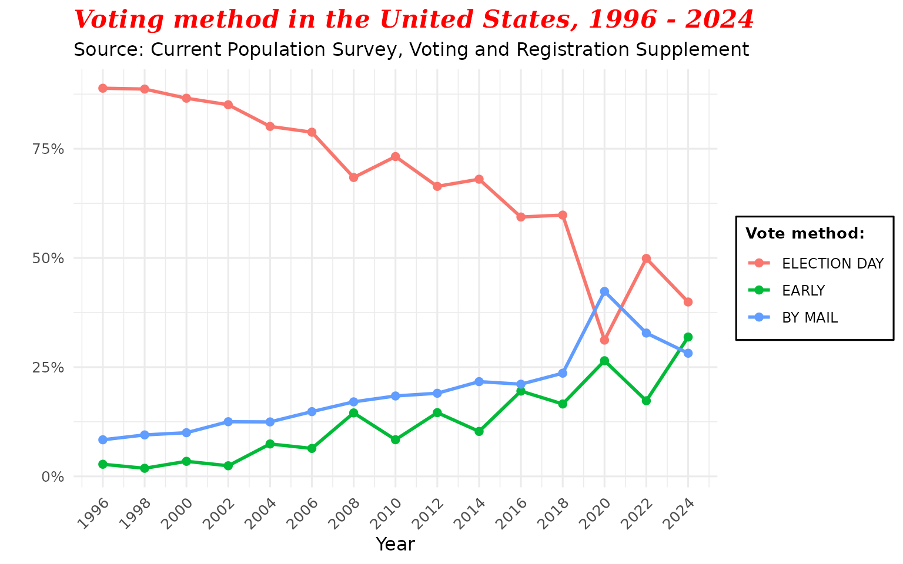
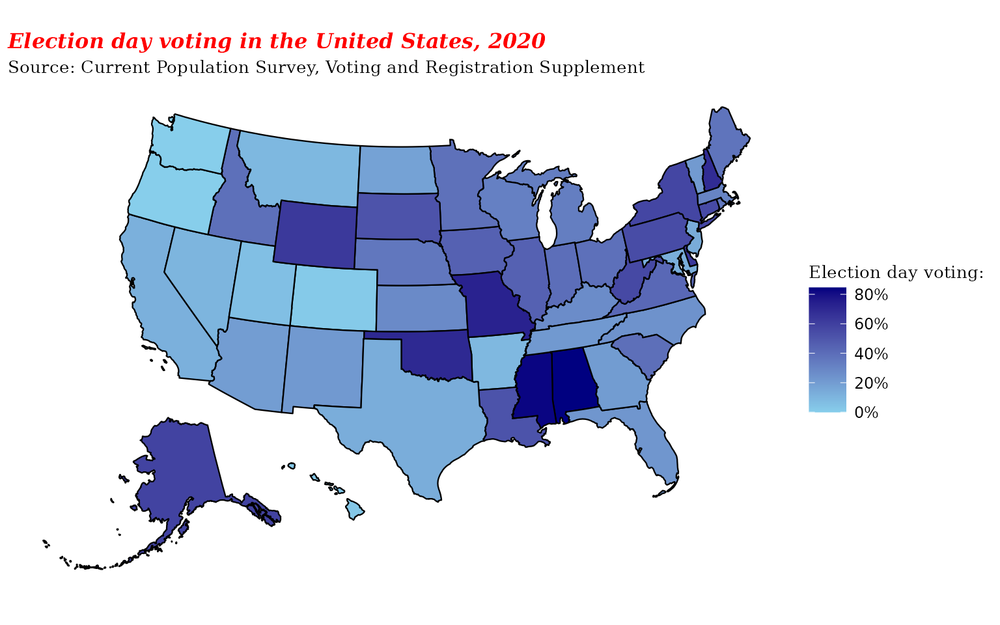
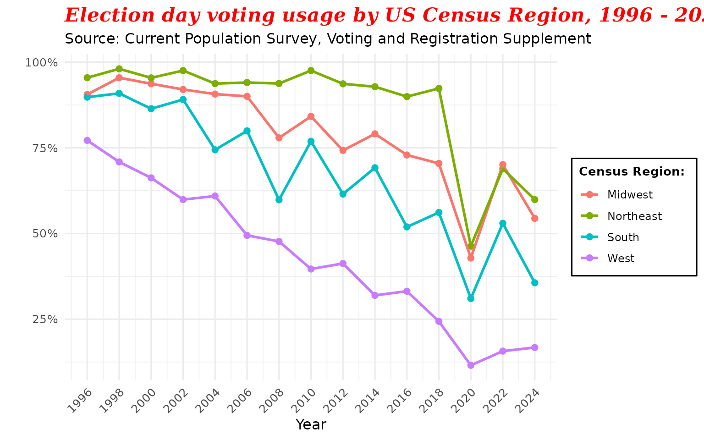
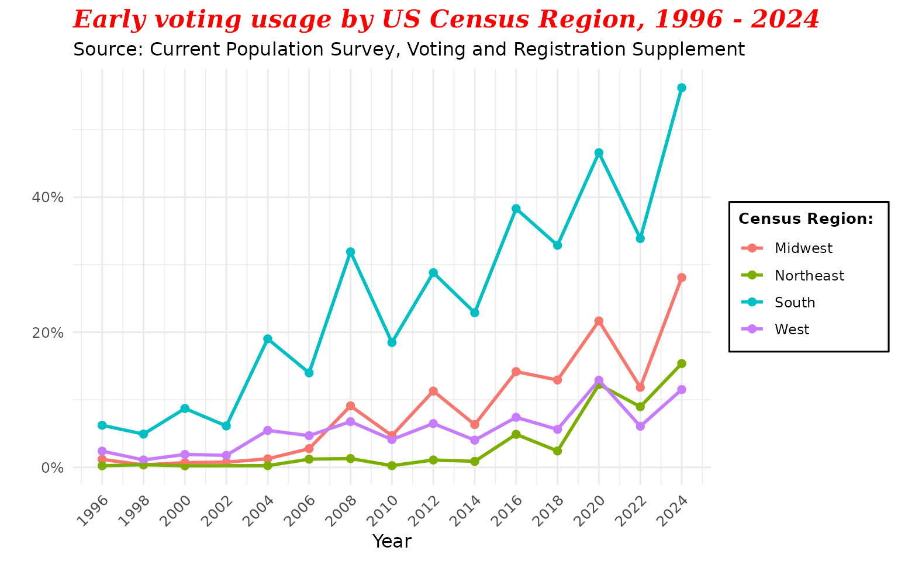
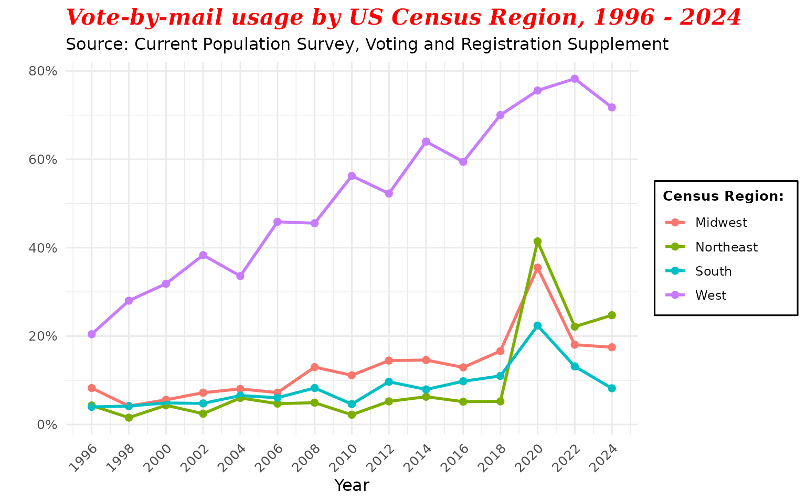

Using the CPS and `cpsvote` to Understand Voting Part 2
Source:vignettes/vote_method_trends.Rmd
vote_method_trends.RmdNote: The examples in this vignette use the built-in
cps_allyears_100ksample dataset (100,000 rows across all years). Estimates may differ slightly from analyses using the full CPS dataset. To work with the full data, usecps_load_basic().
One of the most striking trends in American elections over the past three decades is the steady decline in in-person election day voting in federal elections. In 1996, the first year that the Current Population Survey asked about voting method, 89% of Americans were voting at physical polling locations on election day. By 2018, that figure had declined to 60%, a drop of nearly 30 percentage points. In 2020, the COVID-19 pandemic and the voting reforms that took place as a result led to by far the lowest rate of in-person election day voting in American history, 31%.
Looking over the past 30 years, a clear pattern of movement from in-person election day voting toward early and mail voting emerges.
library(srvyr)
library(ggplot2)
library(ggthemes)
library(scales)
library(dplyr)
knitr::opts_chunk$set(echo = FALSE, warning = FALSE, results='asis')
data("cps_allyears_100k")
cps <- cps_allyears_100k
cps <- cps %>%
mutate(
census_region = case_when(
STATE %in% c("ME", "NH", "VT", "MA", "CT", "RI",
"NY", "PA", "NJ") ~ "Northeast",
STATE %in% c("ME", "DE", "WV", "DC", "VA", "NC", "SC", "GA", "FL",
"KY", "TN", "MS", "AL",
"OK", "AR", "LA", "TX") ~ "South",
STATE %in% c("WI", "MI", "IL", "IN", "OH",
"ND", "MN", "SD", "IA", "NE", "MO", "KS") ~ "Midwest",
STATE %in% c("MT", "ID", "WY", "NV", "UT", "CO", "AZ", "NM",
"WA", "OR", "CA", "AK", "HI") ~ "West")) %>%
filter(YEAR > 1994)
The geographic distribution of this trend is striking. In 2020, states with full vote-by-mail systems had particularly low rates of in-person election day voting. Five states had plans for permanent systems prior to 2020 (CO, HI, OR, UT, WA), and several others sent all (or almost all, in Montana) voters a mail ballot in the wake of the COVID-19 pandemic (CA, DC, MT, NV, NJ, VT). Some states in the South and particularly the Southwest also reported low rates of in-person election day voting. The Northeast stands out as maintaining high rates of in-person election day voting, as do states like Alabama and Mississippi.

Breaking down the trend by region and year makes the picture clearer. While the Northeast has only seems a mild decline of about 5% (from 96% to 91%) in in-person election day voting, and the Midwest experienced modest decline from 92% in 1996 to 72%. The real change came in the West and the South. The Western states saw an enormous drop from 78% to 28% and the South declined from 90% to 55%.

The source of these changes were not evenly distributed across regions. The decline of in-person election day voting in the South was driven almost entirely by the ascent of early in-person voting, which rose from just 6% in 1996 to 48% in 2020. None of the other regions saw increases of more than 20%.

The story is analogous but even more pronounced in the West. Instead of early voting, the Western states have seen a massive increase in vote-by-mail, rising from 20% in 1996 to 66% in 2020. This change was driven by the adoption of universal vote-by-mail systems in Oregon, Washington, and Colorado, and more recently by the increase in mail voting in California. As with the South and early voting, none of the other census regions saw more than a modest increase in mail voting.
